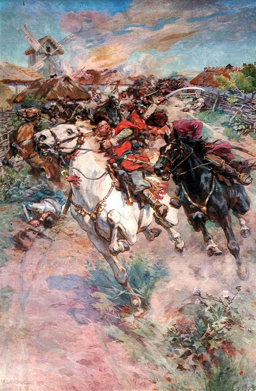

Богда́н (Зино́вій-Богда́н) Хмельни́цький гербу Абданк (27 грудня 1595 (6 січня 1596)[1][2] — 27 липня (6 серпня) 1657) — політик, полководець і дипломат, провідник Національно-визвольних змагань 1648—1657 років, творець Української козацької держави та її перший гетьман[1].
Батько — чигиринський підстароста Михайло Хмельницький — перебував на службі у коронного гетьмана Станіслава Жолкевського, потім у його зятя Івана Даниловича. Історики мають надзвичайно мало відомостей про Михайла Хмельницького. Досі невідомо, з якого поселення — Хмільника, Хмелева, Хмеліва, Хмельного чи Хмелівки — походив рід Хмельницьких. Іван Крип'якевич припускав, що він — виходець із с. Хмельника, розташованого у Перемиській землі. Є версія про польське (мазовецьке) походження Михайла, яку не підтримують українські історики[8]. Роберт Магочі у своїй історії України пише про білоруське походження Михайла Хмельницького[9]. Мати походила з козацького роду[10]. На портреті того часу, внизу, розміщений герб Сирокомля Богдана Хмельницького[11]. Факт шляхетства Хмельницького не доведений. За найпопулярнішою версією, його батько — шляхтич, який внаслідок баніції був позбавлений статусу. Згодом шляхетство отримав син гетьмана: за гербівниками о. Каспера Несецького (1715—1724 роки, Львів) та Яна Непомуцена Бобровича (1835 рік) — з 1659 року Хмельницькі користувалися гербом Масальських (пол. herb Masalski), саме ним король Ян II Казимир офіційно нагородив Юрія Хмельницького під час нобілітації. Звідси ще одна поширена версія, за якою Хмельницькі походили з руського шляхетського роду Масальських — нащадків чернігівських князів. Освіту здобув у Львівській єзуїтській колегії[12] чи в Ярославі[13].
На королівській службі
Вступивши до реєстрового козацтва, Хмельницький під час одного з боїв під Москвою врятував королевича Владислава IV, і потім той завжди прихильно до нього ставився. Повернувшись на батьківщину, брав участь у польсько-османській війні 1620—1621 років, під час якої в битві під Цецорою батько й син Хмельницькі потрапили в османський полон. Іншої думки — старший Хмельницький загинув в цій битві — дотримувався, зокрема, Мирон Кордуба[14]. Ще за одною версією, батько загинув в османському полоні, в який потрапив і Богдан. Два роки важкого рабства (за однією версією — на османській галері, за іншою — в адмірала) для Хмельницького не пройшли даремно: вивчивши досконало османську і татарську мови, він зважується на втечу (за іншими даними, був викуплений родичами). Перебуваючи у Стамбулі, Богдан фактично виконував обов'язки перекладача при одному з командувачів османського флоту, удосконаливши своє знання османської мови. У 1622 році Хмельницький утік з полону (версії про викуп, матір'ю[9] чи знайомими, вважаються малоймовірними в останніх біографіях Богдана Хмельницького)[15][16]. Інформація про прийняття ним ісламу — легенда[13]. Батько залишився в Османській імперії, незабаром помер[17]. Повернувшись до Суботова, Богдан був зарахований у реєстрове козацтво. Близько 1623[18] року (за іншими даними у період 1625—1627 років) Хмельницький одружився з Ганною Сомківною (козачкою з Переяслава) З кінця 1620-х років почав активно брати участь у морських походах запорожців на османські міста (кульмінацією цього періоду став 1629 рік, коли козакам вдалося захопити передмістя Константинополя). Після довгого перебування на Запоріжжі Хмельницький повернувся до Чигирина та отримав уряд сотника чигиринського. В історії наступних повстань козаків проти Речі Посполитої між 1630 і 1638 роками ім'я Хмельницького не зустрічається. Єдина його згадка у зв'язку з повстанням 1638 року — договір про капітуляцію повсталих був писаний його рукою (він був генеральним писарем у повсталих козаків) і підписаний ним та козацькою старшиною. Після поразки знову зведений у ранг сотника. Від 1622 по 1637 рік немає певних відомостей про життя і діяльність Хмельницького. Всі пізніші оповіді про його великі подвиги у війнах з татарами, османами, Москвою (під час Смоленської війни 1632—1634 років) не мають документального підтвердження. Безперечне лише те, що у 1620-х роках Хмельницький зв'язався з Козаччиною, де він служив, мабуть, у Чигиринському полку, брав участь у військових походах козаків проти татар і коронного війська. Близько 1625—1627 років Хмельницький оселився на успадкованому від батька хуторі Суботові, біля Чигирина. Від 1633 року на службі у великого коронного гетьмана Станіслава Конецпольського, отримав квартиру в Бродах. Під час оглядин новозбудованого Бродівського замку у 1633 році, на які запросили місцеву шляхту, Хмельницький необачно висловився
Хмельниччина
Початок
По смерті польського короля Сигізмунда III Вази (квітень 1632 року) козацька старшина вислала на конвокаційний сейм своїх представників із вимогою дозволити брати участь у виборах нового короля й послабити національно-релігійні утиски. На провінційних сеймиках в Україні обговорювалося питання про необхідність повернення православним вірянам їхніх прав, яких їх позбавлено після укладення Берестейської унії 1596 року. Так, на сеймику в Прилуках запорозькі козаки склали для своїх делегатів інструкцію, в якій вимагали позитивного вирішення на сеймі питання про відновлення прав православної церкви. Подібні вимоги висували й братства, зокрема, Львівське та Віленське. Останнє навіть виготовило спеціальну брошуру для конвокаційного сейму під назвою «Синопсис» — «Короткий опис прав, свобод і вольностей…». Вимоги українського населення підтримала й православна духовна ієрархія на чолі з архімандритом Києво-Печерської лаври Петром Могилою. Оскільки повернення відібраних у них прав вимагали й протестанти, П. Могила знайшов підтримку в литовського гетьмана Христофора Радзивілла. На конвокаційному сеймі 22 червня 1632 року у Варшаві православні та протестанти спільно подали свої вимоги, сформульовані у 14 пунктах. Під час роботи комісії (входили від православних — П. Могила, від уніатів — Велямин Рутський), яку очолював королевич Владислав, було укладено проєкт угоди між представниками православного і католицького духовенства (містив 9 пунктів). У вересні 1632 року на елекційному сеймі під тиском православних делегатів (серед них і Адам Кисіль), що вимагали негайно визнати свободу віровизнання і права православної церкви, створено нову комісію і підготовлено «Статті». Згідно з цим документом православна церква в Україні офіційно діставала право мати свою ієрархію на чолі з митрополитом і 4 єпископами (львівським, луцьким, перемиським, мстиславським), вільно відправляти службу, мати церкви, монастирі, друкарні, школи, братства. Православній церкві поверталися церкви й монастирі в Києві (крім Видубицького монастиря). Київським православним митрополитом обрано П. Могилу. «Статті» мали компромісний характер і не могли остаточно врегулювати релігійне питання в Україні. Крім того, після обрання королем, Владислав IV під тиском шляхти Речі Посполитої анулював деякі пункти цього акту.
Коаліції
Першою була українсько-кримсько-османська коаліція, утворена у 1647—1648 роках. Вона паралізувала небезпеку з боку коронно-московського союзу А. Киселя 1647 року й допомогла Україні здобути великі мілітарні успіхи, завершені Зборівською угодою 1649 року. Але, внаслідок дворазової зради кримського хана (Берестечко — 1651 рік, Жванець — 1653 рік), й пасивності Османської імперії, Хмельницькому не вдалося повністю використати успіхи й здобути остаточну перемогу над Короною[джерело?]. Хоча візир Кримського ханства Сефер Гази вважав, що зрадив Хмельницький, а не кримський хан[34][35][36]. Так, після взяття Високого Замку Хмельницький відправив своїх послів до Московії. Друга коаліція — українсько-московська, з царем Олексієм I Михайловичем, укладена в Переяславі 1654 року (додатково затверджена березневими статями 1654 року, які козацьке посольство уклало з московським царем у м. Москва) скерована проти Речі Посполитої. Текст угоди так і не вдалося знайти, а представники Московії спираються лише на чернетки. Ця угода не принесла Україні всіх тих воєнних і політичних успіхів, задля яких її було створено. Козацька старшина, духівництво та київський митрополит не підтримали угоди й відмовилися присягати цареві. 1656 року московський цар зрадив переяславські домовленості й без участі українських представників, підписав у м. Вільно договір між Московією та Річчю Посполитою. Третя антипольська коаліція (1656—1657 роки) — союз між Україною, Швецією, Семигородом та іншими державами (Бранденбург, Молдавія, Валахія), внаслідок якої було укладено Раднотський договір. Перші дві коаліції мали на меті завдати Речі Посполитій військово-політичної поразки й забезпечити та гарантувати цілісність і незалежність козацької держави, третя антипольська коаліція (1656—1657 роки) — союз між Україною, Швецією, Семигородом та іншими державами (Бранденбург, Молдавія, Валахія), — за планом Хмельницького, була направлена на цілковиту ліквідацію держави Речі Посполитої («снести б Коруна вся, будто Коруна Польская и не бывала»), та створити незалежну Руську державу (Велике князівство Руське) в межах цілої етнографічної території України та Білорусі під владою гетьмана й Війська Запорізького. Це дуже збентежило московський уряд, який доклав усіх зусиль, щоб перешкодити успіхові цієї коаліції. Московія, після підписання миру з Річчю Посполитою, розпочала війну зі Швецією. Одночасно на теренах Речі Посполитої вирувала війна, що увійшла в історію під назвою «Потоп». Військові невдачі та нереалізація дипломатичних планів Хмельницького прискорила його смерть.
Відновлення церков
За його сприяння 1655 року було покрито міддю та позолочено верх церкви Архистратига Михаїла Золотоверхого монастиря у Києві[37]. 25 травня 1654 року з Чигирина Богдан Хмельницький надсилає листа до московського патріарха Никона з проханням звернутися до царя для підтвердження привілеїв Київської митрополії[38].
Смерть
Богдан Хмельницький в останні роки свого життя часто хворів. Прагнув спадкової передачі влади (гетьманства) своєму синові Юрію[39]. За даними Мирона Кордуби, звістка про бунт відділу козаків, висланого для рятунку Ракоці від нападу татар, призвела до апоплексії у вже хворого гетьмана, через що він утратив дар мови. Упокоївся вранці 27 липня (6 серпня за новим стилем) 1657 року в Чигирині й 25 серпня[40] був похований у Суботові, в Іллінській церкві[джерело?], яку сам збудував. Вона мала стати родовою усипальницею Хмельницьких[джерело?]. Після смерті забальзамоване і поховане тіло гетьмана зникло. Де саме воно перебуває нині — невідомо. Власне, існує дві версії цієї події, так звана польська й українська. За польською версією, руський воєвода Стефан Чарнецький 1664 року напав на Суботів, викопав домовину з тілом гетьмана, спалив, а попіл вистрілив з гармати. Український варіант це припущення повністю відкидає, мовляв, тіло Богдана було перепоховано його старим другом Лавріном Капустою. Щоб не допустити нової наруги над його тілом, нове місце поховання знало дуже обмежене коло осіб, які в ході війн загинули. Вчені припускають, що ймовірним місцем перепоховання праху Хмельницького може бути «Семидубова гора» в с. Івківці, що неподалік Суботова. Можливо, також, що Гетьман похований в Іллінській церкві, у склепі, який виявили у 2019 році[41]. Доказів підтвердження обох версій поки що немає.